ap-southeast-1a และ 1b)| เกณฑ์การประเมิน (Criteria) | น้ำหนัก | ประเมินตนเอง | หลักฐานจริงบน AWS |
|---|---|---|---|
| 1. Security Architecture & Design | 25% | 25 / 25% | 3-Tier, 6 Subnets, Chained SG, Zero SSH |
| 2. Functionality & Requirements | 20% | 20 / 20% | ระบบทายผลบอล, 2 ALBs, RDS PostgreSQL |
| 3. Implementation & Configuration | 20% | 20 / 20% | NAT GW, 5 Route Tables, Golden AMIs |
| 4. Security Controls & Best Practices | 15% | 15 / 15% | KMS AES-256, 5 IAM Groups, Secrets Manager |
| 5. Monitoring, Logging & Alerting | 10% | 10 / 10% | CloudWatch Alarms, CloudTrail Logging S3 |
| 6. Documentation & Presentation | 10% | 10 / 10% | เล่มรายงานสมบูรณ์ + Slide + ภาพจริง E01–E20 |
| รวมคะแนนการประเมินตนเอง (Total) | 100 / 100% | สมบูรณ์ครบถ้วนทุกข้อกำหนด | |
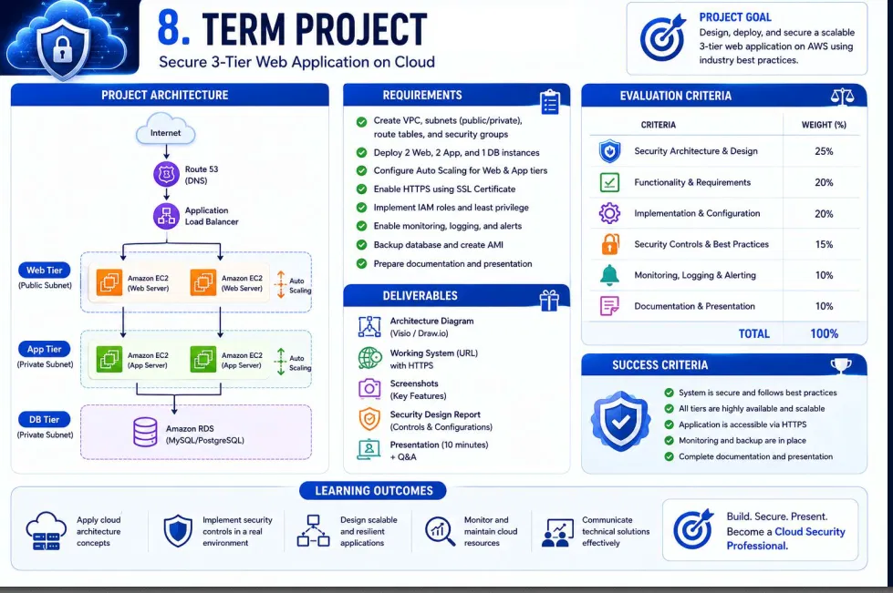
ผู้ใช้ภายนอกเข้าถึงผ่าน web-lb (Internet-facing ALB) บนพอร์ต HTTP/HTTPS เท่านั้น กระจายทราฟฟิกไปยังเครื่อง Web EC2 ที่รัน Nginx ซึ่งไม่มีการเปิดพอร์ต SSH 22 สู่สาธารณะ
Node.js API Engine อยู่ใน Private Subnet ตัดขาดจากอินเทอร์เน็ตภายนอก รับทราฟฟิกผ่าน app-lb (Internal ALB) และออกเน็ตทางเดียวผ่าน NAT Gateway เมื่อต้องอัปเดตระบบ
RDS PostgreSQL 16 อยู่ใน Isolated Subnets ไม่มีเส้นทางออกอินเทอร์เน็ต 100% รับทราฟฟิกผ่านพอร์ต 5432 จากกลุ่มความปลอดภัย Sg-app เท่านั้น และเข้ารหัสด้วย KMS
| Tier / ชั้นเครือข่าย | Subnet Name | AZ | IPv4 CIDR | Subnet ID |
|---|---|---|---|---|
| Public Web | Web_Tier_1 | ap-southeast-1a | 10.0.1.0/24 |
subnet-009f2f0c |
| Public Web | Web_Tier_2 | ap-southeast-1b | 10.0.2.0/24 |
subnet-01eed2b3 |
| Private App | App_Tier_1 | ap-southeast-1a | 10.0.11.0/24 |
subnet-0b9ae95f |
| Private App | App_Tier_2 | ap-southeast-1b | 10.0.12.0/24 |
subnet-053038c3 |
| Isolated DB | DB_1 | ap-southeast-1a | 10.0.21.0/24 |
subnet-0aaee3ea |
| Isolated DB | DB_2 | ap-southeast-1b | 10.0.22.0/24 |
subnet-09b3df4a |
/24 แยกขาดแต่ละ Tier และแต่ละ AZ ทำให้จัดการ Route Tables และวิเคราะห์ Access Logs ได้ง่ายap-southeast-1a และ ap-southeast-1b รองรับการทำ Auto Scaling และ RDS Failover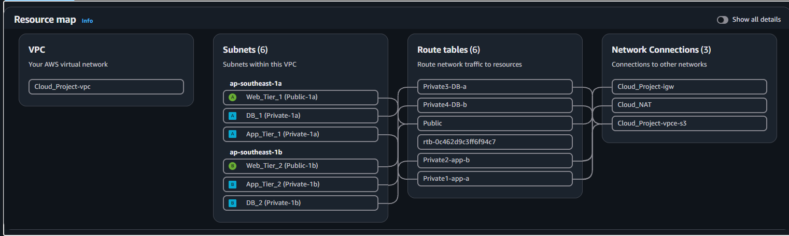
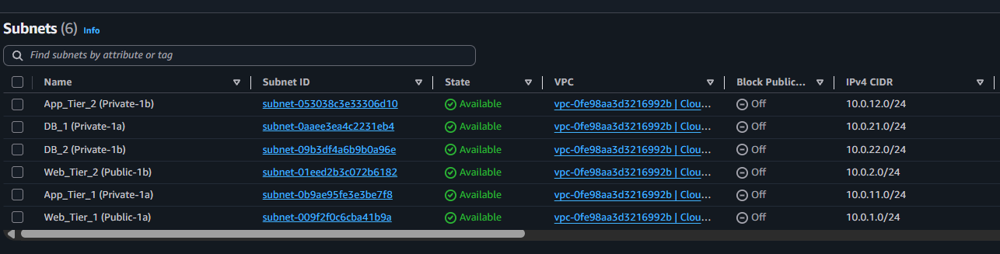
| Route Table Name | Subnet ที่ผูกไว้ | เส้นทางหลัก (0.0.0.0/0) | ระดับการเข้าถึง |
|---|---|---|---|
| Public | Web_Tier_1, Web_Tier_2 | Cloud_Project-igw |
Internet Egress/Ingress |
| Private1-app-a | App_Tier_1 (1a) | Cloud_NAT (NAT GW) |
Outbound Only |
| Private2-app-b | App_Tier_2 (1b) | Cloud_NAT (NAT GW) |
Outbound Only |
| Private3-DB-a | DB_1 (1a) | ไม่มี (No 0.0.0.0/0) | Air-Gapped 100% |
| Private4-DB-b | DB_2 (1b) | ไม่มี (No 0.0.0.0/0) | Air-Gapped 100% |
ติดตั้ง Gateway VPC Endpoint (Cloud_Project-vpce-s3) เพื่อให้ App Tier และ DB Tier เข้าถึง Amazon S3 (เช่น การเก็บ Audit Logs หรือ Backup) ผ่าน AWS Internal Private Backbone โดยตรงฟรี 100% ไม่ต้องวิ่งผ่าน NAT Gateway ช่วยประหยัดค่าบริการ Data Processing Fee
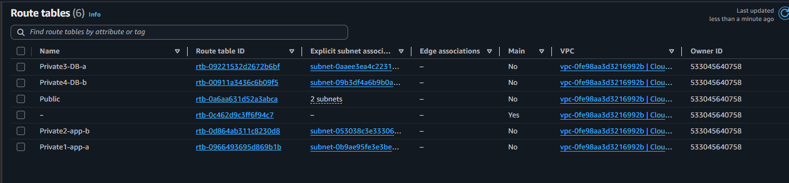
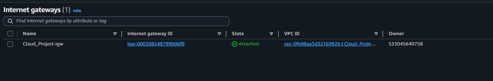
Cloud_Project-igw Attached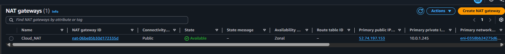
Cloud_NAT EIP 52.74.197.153sg-0c598...) แทนที่จะเป็น IP Address ทำให้ระบบตรวจสอบที่ Virtual Interface ของ AWS โดยตรง หากมีเครื่องอื่นแอบใช้ IP เดียวกันใน Subnet ก็ไม่สามารถเข้าถึงได้
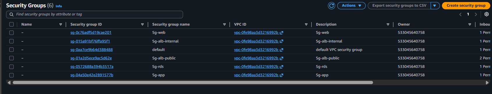
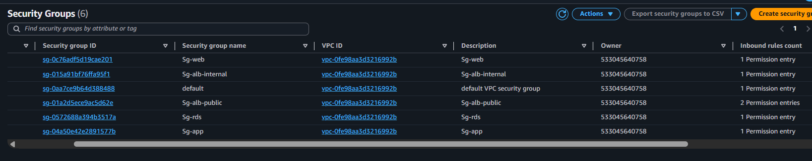
| IAM User | IAM Group | ขอบเขตหน้าที่ (Job Function) | Managed Policies ที่แนบ |
|---|---|---|---|
admin |
Admins | หัวหน้ากลุ่ม / ผู้ดูแลระบบสูงสุด | AdministratorAccess |
Network |
Network | วิศวกรระบบเครือข่าย | AmazonVPCFullAccess |
Dev |
Everyone | นักพัฒนาเว็บ / ซอฟต์แวร์ | ReadOnlyAccess |
Data |
Data | ผู้ดูแลฐานข้อมูลและข้อมูลลับ | AmazonRDSFullAccess, S3, SecretsManager |
Ops |
Ops | วิศวกรเฝ้าระวังและปฏิบัติการ | CloudWatchFullAccess, CloudTrail, SSM |
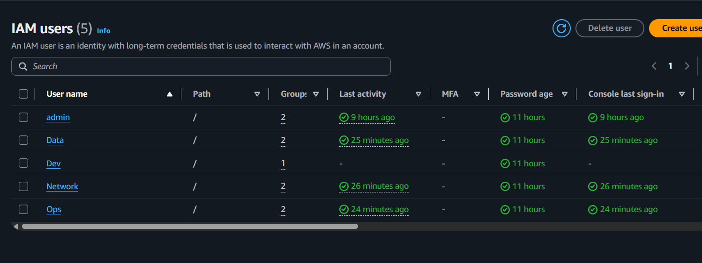
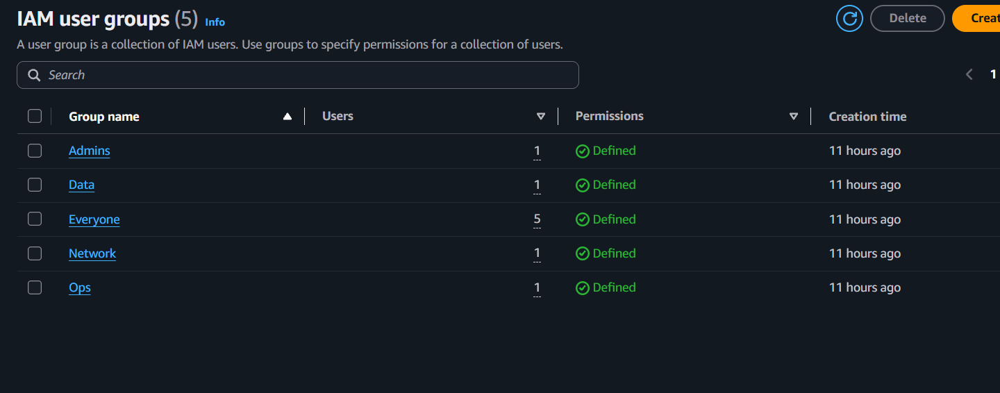
| DB Identifier | dns69 (Engine: PostgreSQL 16.3) |
| DB Subnet Group | dns69-db-subnet-group (ผูก Subnet 1a & 1b) |
| Public Access | NO (Air-Gapped ไม่เข้าถึงจาก Internet) |
| Storage Encryption | Enabled — AWS KMS (AES-256) |
| Firewall Control | Security Group: Sg-rds (Port 5432 จาก Sg-app) |
| Deployment Mode | Single-AZ (Free Tier 750 ชม.) พร้อม Subnet Multi-AZ |
release-group2-dns69 เก็บ Static Assets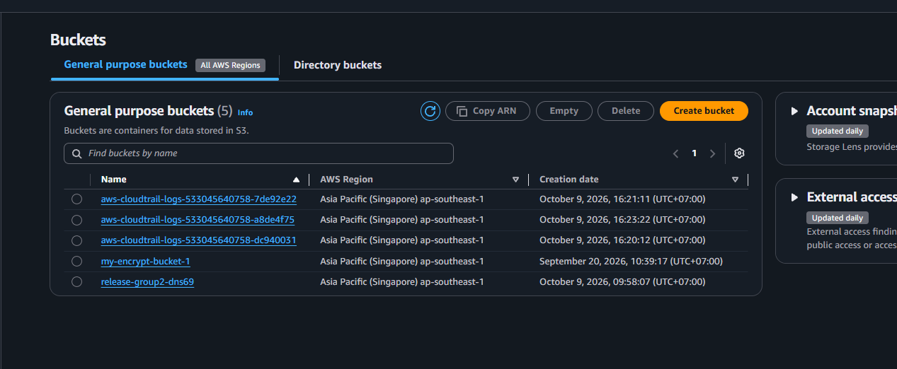
db.t3.micro) พบข้อจำกัดว่าบาง AZ ใน Region ไม่รองรับ Free Tier instance จึงได้ออกแบบ DB Subnet Group ให้ครอบคลุม AZ ที่มี Capacity เพียงพอ (ap-southeast-1a และ 1b) ทำให้สร้างฐานข้อมูลผ่านโดยคงสิทธิ์ Free Tier ไว้
| ALB Name | Scheme | Subnets | Security Group |
|---|---|---|---|
| web-lb | Internet-facing | Web_Tier_1, 2 | Sg-alb-public (Port 80/443) |
| app-lb | Internal Private | App_Tier_1, 2 | Sg-alb-internal (Port 5000) |
app-lb ใช้ Private IP ภายใน VPC ป้องกันการเข้าถึง API Engine จากโลกภายนอก
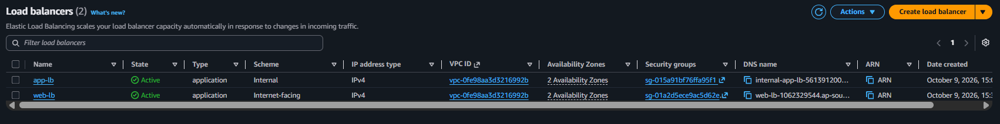
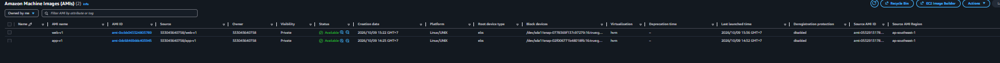
ข้อมูลรหัสผ่านฐานข้อมูล, JWT Secret Key และ API Keys ทั้งหมด ไม่ถูก Hardcode ในไฟล์ซอร์สโค้ด หรือ Environment Variables ของเซิร์ฟเวอร์ แต่ถูกจัดเก็บใน AWS Secrets Manager และดึงมาใช้แบบ Real-time:
การบริหารจัดการเซิร์ฟเวอร์ EC2 กระทำผ่าน SSM Agent ภายในเครื่อง โดยไม่ต้องใช้กุญแจ SSH Key (.pem) และไม่ต้องเปิด Inbound Port ใดๆ บน Security Group:
| เปรียบเทียบ | SSH ดั้งเดิม (Port 22) | AWS Systems Manager (SSM) |
|---|---|---|
| Inbound Port | ต้องเปิด Port 22 | ปิดพอร์ต 100% (No Inbound) |
| Key Storage | เสี่ยงกุญแจ .pem หาย/หลุด | ใช้ IAM Instance Profile |
| Audit Trail | บันทึกแยกในเครื่อง | บันทึกทุก Session ลง CloudTrail |
| Bastion Host | ต้องสร้างและจ่ายค่าเครื่องเพิ่ม | ไม่จำเป็นต้องมี Bastion Host |
| Alarm Name | เป้าหมายที่ตรวจวัด | Threshold | สถานะจริง |
|---|---|---|---|
| app-unhealthy | Internal ALB Target Health | UnHealthyHostCount >= 1 |
OK (Healthy) |
| web-4xx | Public ALB 4XX Errors | Target_4XX_Count > 10 |
OK (Healthy) |
| EC2 & RDS | Infrastructure Status | Instance Health Check | OK (5 Services) |
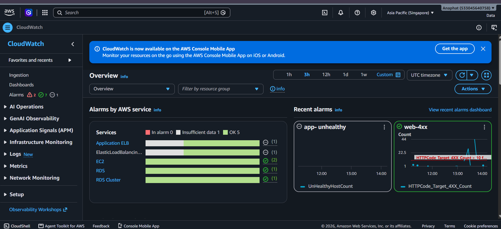
app-unhealthy และ web-4xx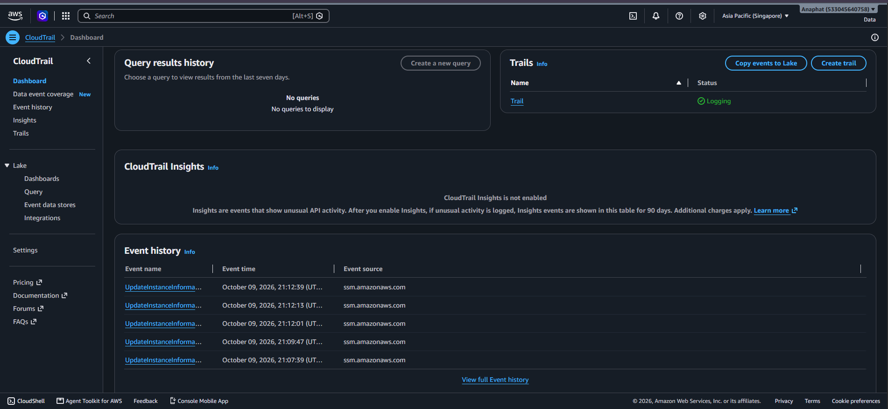
| หลักการความปลอดภัย (Principle) | แนวคิดทางวิศวกรรมความมั่นคงปลอดภัย | การปฏิบัติการจริงบน AWS Management Console | หลักฐานจริง |
|---|---|---|---|
| 1. Defense-in-Depth | การป้องกันเชิงลึกหลายชั้น หากชั้นหน้าบ้านถูกเจาะ ผู้โจมตีไม่สามารถเข้าถึงฐานข้อมูลได้โดยตรง | แบ่ง 3 Tiers, 6 Subnets, 2 ALBs และเชื่อมไฟร์วอลล์ Chained Security Groups ด้วย SG ID | E01, E02, E06, E16 |
| 2. Least Privilege & SoD | จำกัดสิทธิ์ให้เฉพาะที่จำเป็นต่อหน้าที่ และแบ่งแยกหน้าที่ป้องกันความเสียหายจุดเดียว | สร้าง 5 IAM Groups, 5 IAM Users, ไม่มี Long-term Access Key, EC2 ใช้ Instance Profile | E08, E09–E14 |
| 3. Zero Public SSH | ปิดพอร์ต 22 เพื่อขจัดช่องโหว่ Port Scanning และ Brute-force Password Attacks | ปิดพอร์ต 22 ในทุก Security Group 100%, บริหารจัดการเครื่องผ่าน AWS Systems Manager (SSM) | E06, E07, E19 |
| 4. Immutable Infrastructure | เซิร์ฟเวอร์ต้องสร้างใหม่จากภาพต้นแบบที่ผ่านการตรวจสอบความปลอดภัยแล้วเท่านั้น | สร้าง Golden AMIs 2 ชุด (web-v1, app-v1) เพื่อให้การ Auto Scaling รวดเร็วและเหมือนกัน |
E17 |
| 5. Data Protection at Rest | ข้อมูลที่จัดเก็บต้องถูกเข้ารหัสด้วยมาตรฐานสากลป้องกันการขโมย Storage Disk | เปิดใช้งาน AWS KMS (AES-256) บน RDS PostgreSQL Storage และ S3 Buckets | E02, E15 |
| 6. Continuous Observability | ระบบต้องมีความสามารถในการเฝ้าระวัง แจ้งเตือน และตรวจสอบย้อนหลังได้ตลอดเวลา | ตั้ง CloudWatch Alarms (app-unhealthy, web-4xx) และเปิด CloudTrail Logging |
E18, E19 |
| ID | ระดับ | ข้อค้นพบ | การแก้ไข / มาตรการป้องกัน |
|---|---|---|---|
| F1 | HIGH | IAM Users เริ่มต้นยังไม่มีการผูก Virtual MFA | บังคับใช้นโยบาย Enforce MFA Policy ที่กลุ่ม Everyone หากไม่ลงทะเบียน MFA จะถูก Deny ทุกคำสั่ง |
| F2 | MED | NAT Gateway มี 1 ตัวใน AZ 1a เสี่ยง Single Point of Failure | ในขั้นตอน PoC ยอมรับความเสี่ยงเพื่อคุมงบ และเตรียม Route Table แยก AZ ไว้พร้อมเพิ่ม NAT ตัวที่ 2 เมื่อ Production |
| F3 | LOW | Default Security Group มี Inbound rule เดิมของ AWS | ล้าง Inbound rules ของ default SG ทั้งหมด ป้องกันการเผลอใช้งานตามมาตรฐาน CIS Benchmark |
| P1 | PASS | ไม่มีการสร้าง Long-term Access Keys แม้แต่รายการเดียว | ผ่านเกณฑ์: ขจัดความเสี่ยงกุญแจรั่วไหลบน GitHub 100% |
db.t3.micro) เพื่อให้อยู่ในกรอบ Free Tier 750 ชม./เดือนbcrypt, กำหนดสิทธิ์ role: student จาก Server เสมอ, ล็อกอินผ่าน HttpOnly JWT Cookie พร้อม Rate Limit ป้องกัน Brute-force (10 ครั้ง/15 นาที)NOW()) เพื่อปิดรับคำทายอัตโนมัติเมื่อเริ่มเตะ (ป้องกันโกงเวลากดส่ง), ทายสกอร์ 0–20 ประตู แก้คำทายได้จนกว่าจะ Kickoff พร้อม Database Transaction (FOR SHARE) ป้องกัน Race ConditionFOR UPDATE) พร้อมบันทึกลงตาราง audit_logs (Append-Only ที่แอปเขียนได้แต่ลบ/แก้ไม่ได้)web-lb-1062329544.ap-southeast-1.elb.amazonaws.com · CloudFront CDN
| ชั้น (Tier) | เทคโนโลยี & Service | คุณสมบัติด้านความปลอดภัย |
|---|---|---|
| Web Tier | Next.js 15 Standalonedns69-web.service (:3000) |
Proxy Rewrite ไปยัง Internal ALB, ป้องกัน Client สัมผัส API ตรงๆ, Cookie-based Session |
| App Tier | Node.js Express + TypeScriptdns69-api.service (:4000) |
Zod Schema Validation, Helmet, Rate Limiter, Pino Logger ตัดข้อมูลลับ, ดึง Secret ผ่าน IAM Role |
| DB Tier | PostgreSQL 16 (RDS) Database: dns69 |
Least Privilege Role dns69_app (ห้ามใช้ Master), ไม่มีสิทธิ์ DROP TABLE, Air-Gapped Subnet |
| Secrets | AWS Secrets Managerdns69/app |
ดึงค่า DB_PASSWORD, JWT_SECRET แบบ Dynamic ตอนบูต service ปราศจาก Plaintext Secret บนดิสก์ |
โครงสร้างโฟลเดอร์ Group2-Cloud-dns69 แยก /web, /api, /migrations, /deploy ชัดเจน
ยินดีรับฟังข้อเสนอแนะและตอบข้อซักถามจากอาจารย์ผู้สอนและเพื่อนร่วมชั้นทุกท่านครับ